Driveshaft Output Flange and Differential Motor Seals, with Transfer Case Removed
Driveshaft Output Flange and Differential Motor Seals, with Transfer Case Removed
Special tools, testers and auxiliary items required
• Holding fixture (VW 313)
• Pressure plate (VW 402)
• Punch (VW 408 A)
• Engine and transmission holder (VW 540)
• Slide hammer (VW 771)
• Pulling hook (VW 771/37)
• Thrust pad (30 - 504)
• Tube (32 - 119)
• Thrust pad (3062)
• Torque wrench (VAG 1331)
• Torque wrench (VAG 1332)
• Kukko 17/2 Separating device
• Thrust piece (T10185)
• Thrust piece (T10203)
• Socket (T10204)
• Wiring harness repair kit (VAS 1978)
• Loctite (648)
Removing
Secure transfer case to assembly stand with bolts - arrows -.
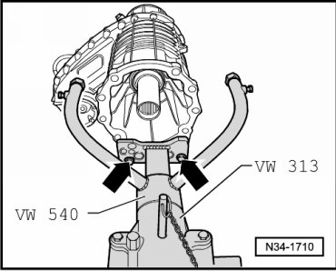
Pressing off dust plate.
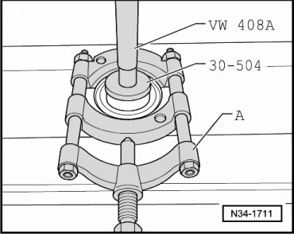
A Separating device 22 to 115 mm, e.g. Kukko 17/2
Pressing on dust plate - A - to stop.
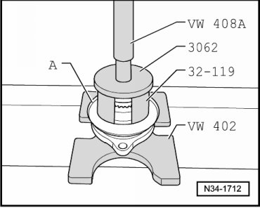
Pulling out seal for rear driveshaft output flange.
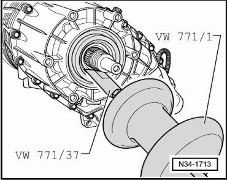
• Figure shows seal for rear driveshaft output flange being pulled out.
• The procedure for pulling out the seal for the front driveshaft output flange is the same.
Installing
Installing seal for rear driveshaft output flange.
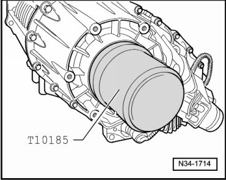
- Fill area between sealing lip and dust lip halfway with sealing grease (G 052 128 A1).
Insert into O-ring into groove of input shaft - arrow -.
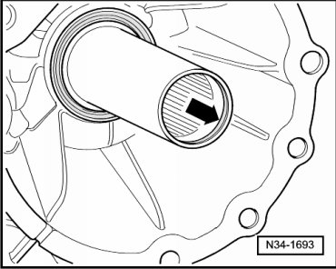
Pressing on dust plate - A - until seated.
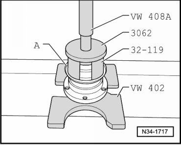
Driving in seal for front driveshaft output flange.
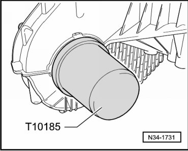
- Fill area between sealing lip and dust lip halfway with sealing grease (G 052 128 A1).
Removing breather tube - A -.
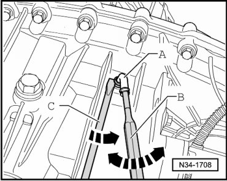
- Guide a driver - B - with a 5 mm diameter into the hole of the breather pipe.
- Move breather pipe - A - in direction of arrow while simultaneously prying breather tube out of transfer case using screwdriver - C -.
Installing breather tube.
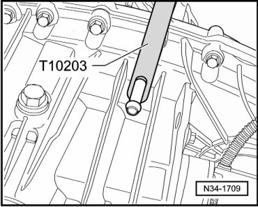
- Coat breather tube with locking fluid loctite (648) before driving in.
Repair solution for replacement of differential motor (V253) and for malfunctioning oil temperature sensor (G8)
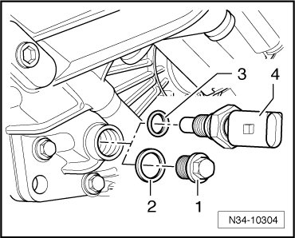
When replacing differential motor (V253) and when oil temperature sensor - 4 - is malfunctioning, the oil temperature sensor (with sealing ring - 3 -) is replaced by a plug - 1 - with sealing ring - 2 -.
Allocation of sealing plug and seal.
Furthermore, the wiring harness for oil temperature sensor (G8) is removed as follows:
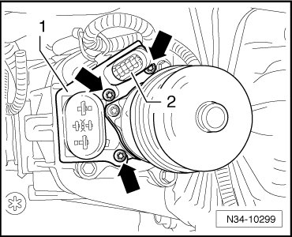
- Remove the retainer - 1 - for the connector from the differential motor, thereby removing the bolts - arrows -.
- Pivot the 10 pin connector out of the retainer - 2 -.
- The wires, pins - 1 - and - 2 - of the 10 pin connector must be removed using the appropriate ejection tool from the wiring harness repair kit (VAS 1978).
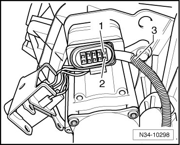
- Remove the wiring harness - 3 - for the oil temperature sensor.
- Close off the wire openings of terminals - 1 - and - 2 - in the 10 pin connector, using an appropriate plug.